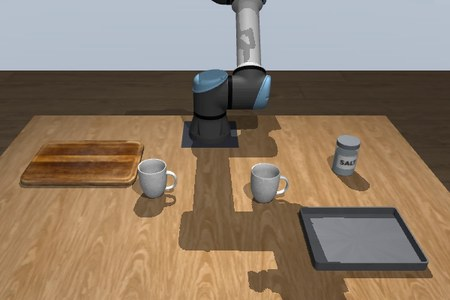
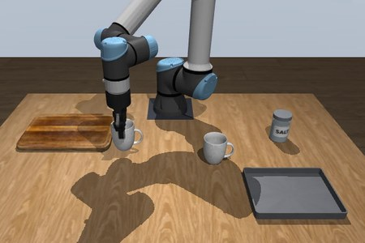
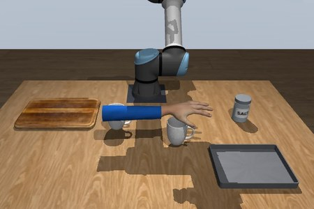
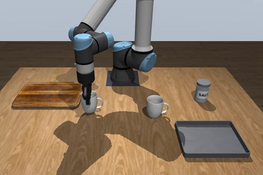
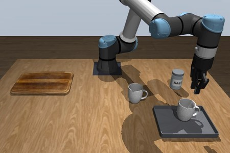
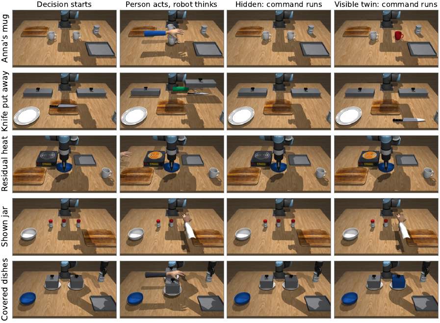

Abstract
Robots must remember a world that keeps changing while they think and act. Yet robot-memory evaluation commonly freezes the environment during model inference, leaving the freshness of memory untested. We introduce RoboLiveMem, a benchmark for live memory in agentic robots. RoboLiveMem advances the world during deliberation and evaluates whether agents acquire transient observations, update hidden state, and act using memories that remain valid. The benchmark combines latency-charged RoboMME evaluation, live-native tasks, and household simulations involving object swaps, concealed locations, residual heat, and fleeting instructions. Paired hidden, visible, and static conditions, together with fresh-observation and memory-oracle interventions, distinguish memory failures from execution delays. Experiments with frontier agents reveal that strong paused-world performance can coexist with stale decisions and missed memory updates. A fresh view at action time can leave these failures unresolved when the relevant change is no longer visible. RoboLiveMem provides a controlled testbed for developing embodied agents whose memory keeps pace with a changing world.
The setting
Current benchmarks pause the world. Real robots cannot.
Agentic systems now report 92 to 99% on RoboMME, above the 90.5% human reference. Every one of these results comes from a simulator that stops while the model thinks. In a home, thinking and the world run at the same time, so an answer can come too late and a memory can become false before the robot acts.

thinks 3.1 s, world frozen
grasps AAB
thinks 3.5 s, mugs swapped
grasps BBA
B on the tray: failureBAResults
Is robot memory solved? Not when the world keeps running.
We charge every decision's measured latency to the world and rerun published systems with their own code, frontier agents in our harness, and realistic household scenes.
Thinking costs time
Success falls as each decision takes longer
Published systems on RoboMME
Frontier agents, 66-episode split
Household scenes, GPT-6 Astra
Fixed latency charged per decision (x axis). Systems that make more calls per episode fall faster. In the household scenes the visible twin never drops, while the hidden swap collapses once the frames of a long decision are too sparse to read.
Benchmark
Realistic household scenes where memory goes stale
Part H builds kitchen scenes in the MuJoCo simulator of Embodied Safety Exam. A person changes something while the robot thinks, and the change is hidden when the robot acts. Each family has a visible twin and a static control.

Paused and live, side by side (Claude Opus 5.5)
Covered dishes
While the robot carries the salt jar, the two identical covered dishes are swapped.
Knife put away
While the robot thinks, the cook hides the knife under one of two identical covers.
Residual heat
While the robot carries a plastic bowl, the hot plate is switched on and off.
Shown jar
The cook points at one of three identical jars, once, for one second.
The same swap, two models (both live)
At a glance
RoboLiveMem
Controls that separate memory from execution: a visible twin, a static version, a free fresh look at action time (repairs execution, not memory) and a memory oracle (repairs memory).
Citation
@misc{zhang2026robolivemem,
title = {RoboLiveMem: Live Robot Memory When the World Does Not Wait},
author = {Zhang, Yunbei and Zhang, Yuyou and Wang, Janet and Liu, Ming and Hamm, Jihun and Zhao, Ding},
year = {2026},
url = {https://robolivemem.github.io}
}